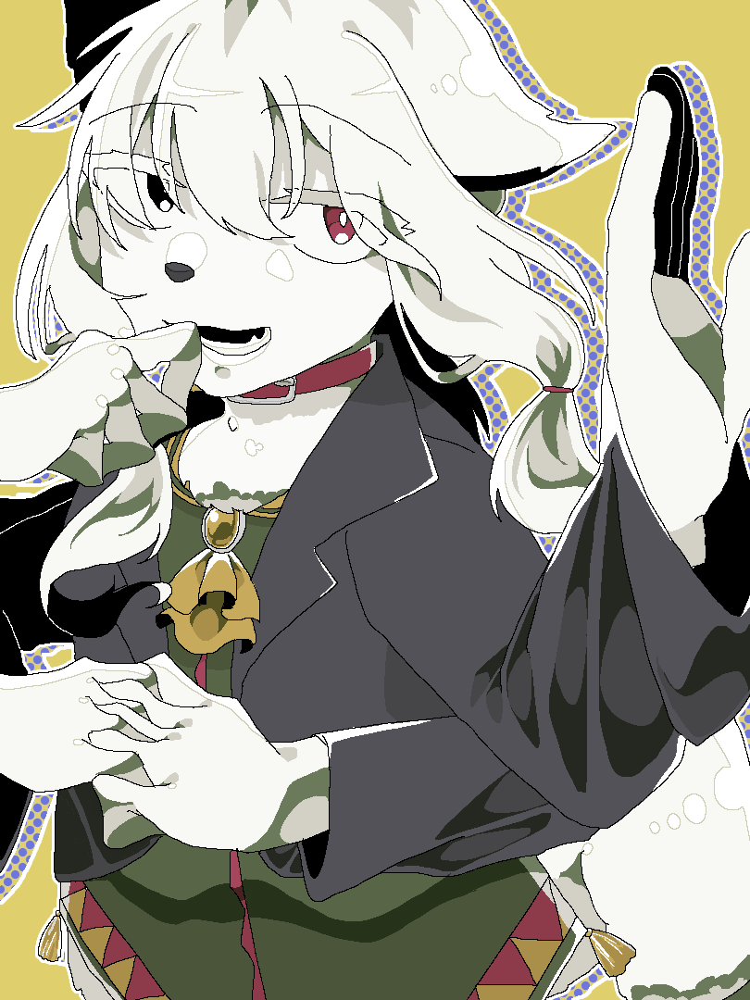

- トップ >
- ブログ
ブログ
週末に一週間の創作成果（という名の制作秘話）を更新します。
7/19 久しぶりの自創作イラストを描いたよ
皆様どうもこんにちは、よしなにです。最近、暑くなりましたね、溶けそうです。 そんな暑さのストレスを私はイラストにぶつけました。久しぶりに趣味絵を描いて、wkwk。 最近は有難いことに同人誌の表紙を担当させていただく機会に恵まれたり、Youtubeの企画のためのイラスト素材、収録…… 色々追われていて、息抜きという息抜きのお絵描きができておりませんでしたが、とても楽しかったです。 このキャラクターは1年位前に、まだフォロワーが一桁だった頃にひっそりと描いていたキャラクターですね。 魔法学校モノの自創作の中で、このキャラクターは、いかに魔力の生産性や知能を高めるか…… また、魔法生物と人工的に作られた人間の種を混ぜるとどんな生物が生まれるのか……そんな実験の産物に生まれた、キメラです。 私の好きな設定ですよね、研究とか実験とか大好きなんですよ。その結果、悲しい生き物が生まれる展開も。 まあ、この子は自分の誕生や命について、好奇の目にさらされることはあれど、外界と隔絶された魔法学校内の研究所の職員として働いていますので、 全然悲観的でもないんですけどね。ただ、今飄々としているが過去がクソ重たいキャラクターがたまらなく好きなんですよね。 ちなみに多腕も癖ですね。欠損とか、奇形とか、遺伝子異常とか、大好きなんですよね（不謹慎）！

このページの先頭へ